Matrace Fortis
vysoké zatížení do 180 kg
výška 24 cm · do 180 kg · tuhost H3 / H4
8 540 Kč
Postele z tvrdých dřevin s nosností 400 kg na lůžko bez příplatku, vybrané modely až 500 kg. Prodloužené délky 210 a 220 cm.

Jednolůžko Luneta v provedení gaučového stylu, zadní zabrána je nosná a vhodná k plnohodnotnému opření.
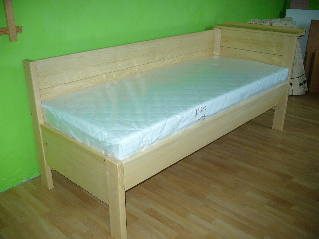
Masivní robustnější postel ze smrku s ložnou plochou 55cm k povrchu matrace.

Bukové zvýšené manželské dvoulůžko, tloušťka materiálu masiv buk 42mm, rozměry na matraci 180x200cm.
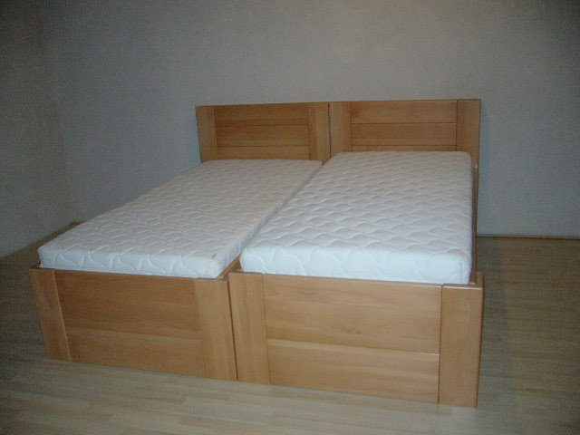
Nadimenzovaná buková postel s vyvýšenou ložnou plochou na v. 65cm ( k povrchu matrace).
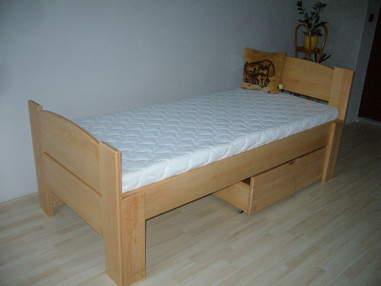
Masivní jednolůžko s vyvýšenou ložnou plochou 60cm k povrchu matrace.
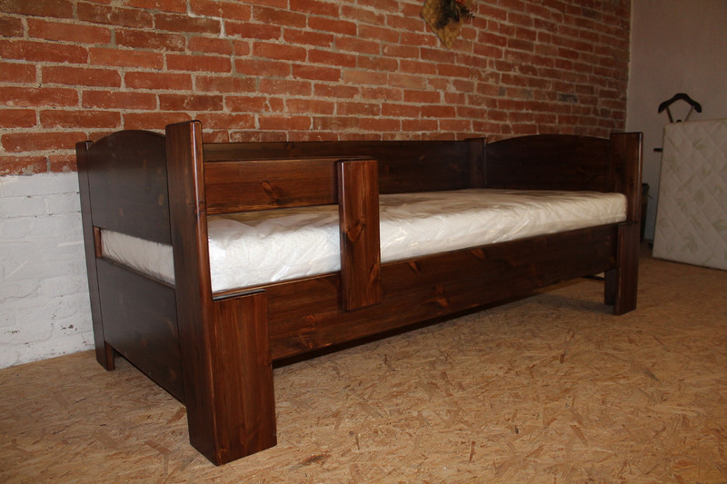
Masivní jednolůžko s vyvýšenou ložnou plochou 60cm k povrchu matrace.
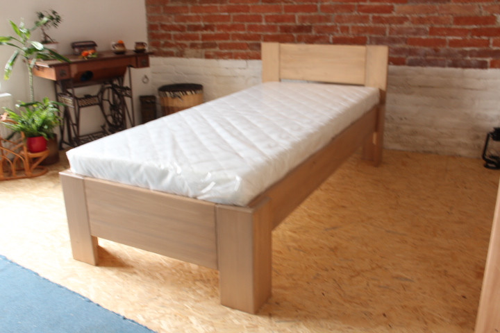
Borovicové nebo smrkové jednolůžko s čelem typ Petra prodloužená na d. 210cm nebo 220cm.
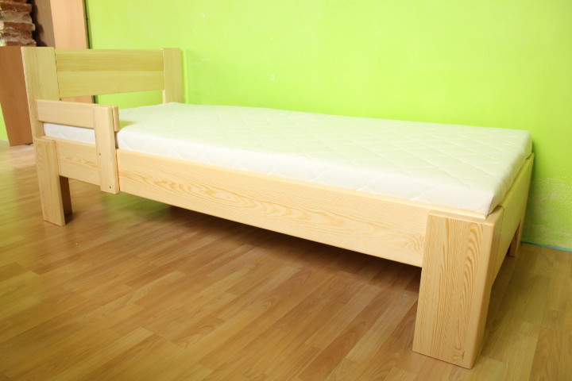
Jednolůžko z masivního smrku nebo borovice, rozměry na matraci 90x200 cm.
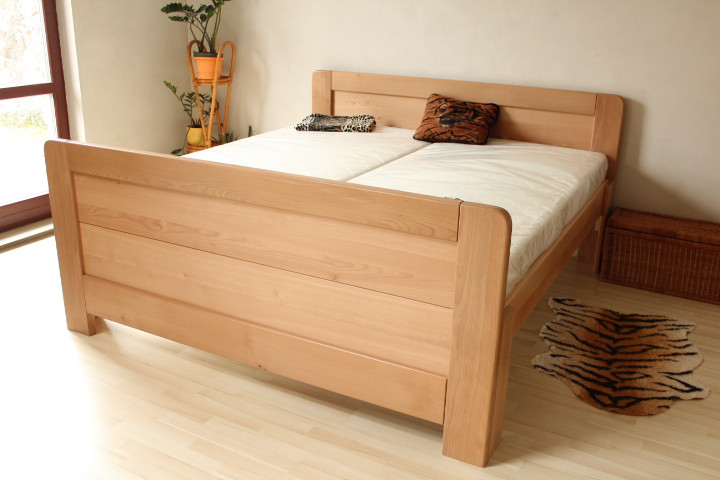
Vysokozátěžové robustní dvoulůžko z masivního buku tloušťka materiálu čel a nohou 42mm.
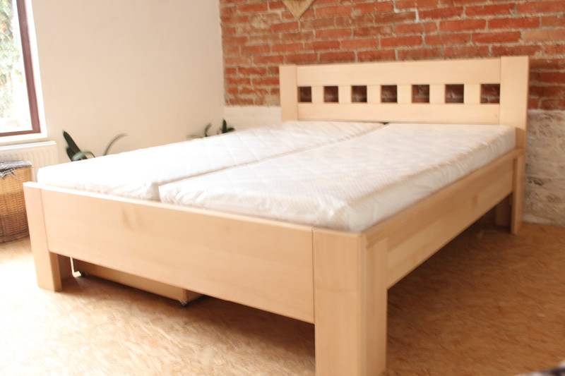
Zvýšená a rozšířená buková postel pro seniory nebo pro osoby vyššího vzrůstu pro pohodlné vstávání.
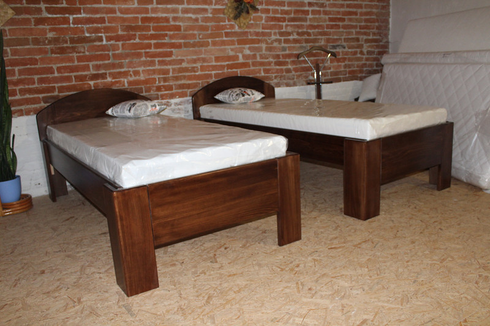
Jednolůžko z masivního přírodního buku, rozměry na matraci 90x200 cm nebo 80x200cm ( jiné rozměry na poptávku).
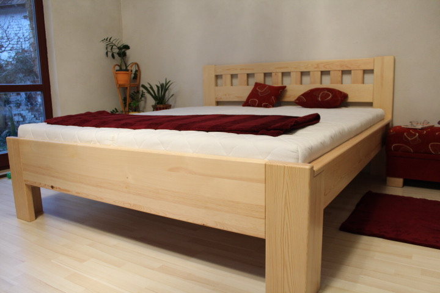
Vysokozátěžové zvýšené dvoulůžko z masivní borovice o tl. materiálu 42mm, ( za stejnou cenu ze smrku).
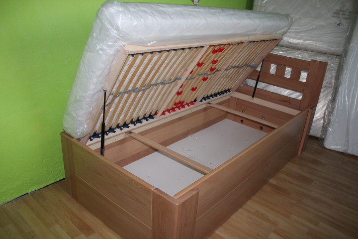
Buková postel s vyvýšenou ložnou plochou na v. 60cm ( k povrchu matrace) s úložným vestavným prostorem.
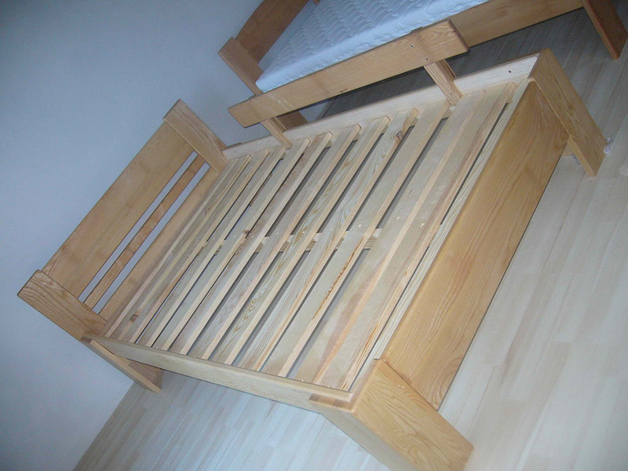
Studentská prodloužená postel s vysokou nosností 400kg v materiálu masivní smrk nebo borovice ( na fotu olše a jasan) s rozměry na matraci š.120x d.210cm nebo d.220cm.
Matrace pro vyšší zatížení: Fortis do 180 kg, Berta do 150 kg. Máte je k vyzkoušení na prodejně.
vysoké zatížení do 180 kg
výška 24 cm · do 180 kg · tuhost H3 / H4
8 540 Kč

vysokozátěžová taštičková, do 150 kg
výška 28 cm · do 150 kg · tuhost T3
9 890 Kč

vysokozátěžová
výška 16 cm · do 130 kg · tuhost T4 / T5
5 720 Kč

vysokozátěžová
výška 17 cm · do 130 kg · tuhost T3 / T4
4 620 Kč
Stavíme z tvrdých dřevin (buk, jasan, dub) a z masivu o tloušťce 40 mm. K tomu patří pevný masivní rošt s nosností 500 kg.
Pro vysoké postavy vyrábíme délky 210 a 220 cm i víc, šířky podle potřeby. Rozměr nás nijak neomezuje.
Vysokozátěžové matrace Fortis (do 180 kg) a Berta (do 150 kg) máte k vyzkoušení na prodejně.
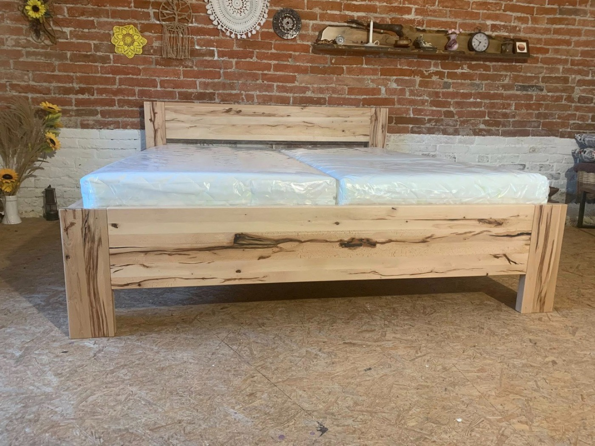
Vyrábíme postele na přání zákazníka tak, aby co nejlépe vyhovovaly potřebám uživatele.
Postele pro seniory mají ložnou plochu ve zvýšené výšce 60cm nebo klasických 55cm nebo pro vyšší postavy je možné ložnou plochu navýšit na 65cm, aby se usnadnilo vstávání. Jsou vhodné pro uživatele s kloubními problémy kyčlí a kolen, při bolestech zad a těžkém vstávání. Pro ještě příjemnější spaní doporučujeme naše matrace.
Postele pro nadměrné mají prodlouženou délku více než 200cm, k těmto postelím nabízíme také prodloužené cenově dostupné nejen rošty ale i matrace.
Vysokozátěžové postele jsou nadimenzované pro vysoké zatížení až 400kg na jedno lůžko bez příplatku. Postele jsou vhodné z tvrdých dřevin jako je buk, jasan, dub atd. Nabízíme také vysokozátěžové matrace.
Všechny naše postele z masivu v této sekci i vyrobené na zakázku jsou za přijatelnou cenu a mají prodlouženou záruku na 5 let.
Vysokozátěžové postele unesou 400 kg na lůžko bez příplatku, vybrané modely z tvrdého buku a dubu až 500 kg. Přesnou nosnost najdete u každého modelu.
Z tvrdých dřevin, tedy buku, jasanu a dubu, o tloušťce materiálu 40 mm, s pevným masivním roštem.
Na typizované postele dáváme 5 let.
Napište nebo zavolejte. Vyrobíme podle vašich rozměrů, nákresu nebo fotky.